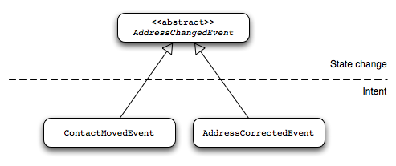
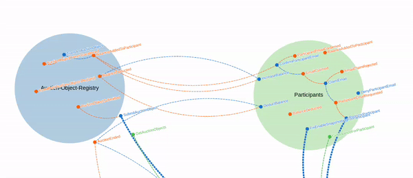

Messaging Concepts
One of the core concepts in Axon is messaging. All communication between components is done using message objects. This gives these components the location transparency needed to be able to scale and distribute these components when necessary.
Although all these messages implement the Message interface, there is a clear distinction between the different types of messages and how they are treated.
Understanding messages
All messages contain a message type, payload, metadata, and unique identifier.
The message type (MessageType) describes what the message means - for example, "OrderPlaced" or "UserRegistered".
This is decoupled from the Java class used to represent the message.
See Message type for details.
The payload contains the information about what happened - the specific data related to that message. For example, an "OrderPlaced" message type would have a payload containing the order ID, amount, and other order details.
The metadata allows you to describe the context in which a message is being sent. You can, for example, store tracing information to allow the origin or cause of messages to be tracked. You can also store information to describe the security context under which a command is being executed.
The identifier uniquely identifies that specific message instance. See Message identifier for details.
|
All messages are immutable
All messages are immutable. Storing additional data in a message means creating a new message based on the previous one, with extra information added to it. This guarantees that messages are safe to use in a multi-threaded and distributed environment. |
Commands
Commands describe an intent to change the application’s state.
They are implemented as POJOs that are wrapped in a CommandMessage.Axon Framework refers to your command as the "command payload." Thus, to retrieve it from a CommandMessage you use the CommandMessage#payload method.
Commands always have exactly one destination. While the sender does not care which component handles the command or where that component resides, it may want to know the outcome. Command messages sent over the command bus allow for a result to be returned.
Next to the command payload, you can store information in the metadata of a command message. The intent of the metadata is to store additional information about a command that is not primarily intended as business information. Auditing information is a typical example - it allows you to see under which circumstances an command was raised, such as the user account that triggered the processing, or the name of the machine that processed the event.
|
Do not base business decisions on metadata
In general, you should not base business decisions on information in the metadata of command messages. If that is the case, you might have information attached that should really be part of the command itself instead. Metadata is typically used for reporting, auditing, and tracing. |
For more on command messages, command handlers, and command-specific configuration options, be sure to read the commands chapter.
Events
Events are objects that describe something that has occurred in the application. A typical source of events is an entity—when something important has occurred within the entity, it raises an event. In Axon Framework, events can be any object, though you are highly encouraged to make sure all events are serializable.
When events are dispatched, Axon wraps them in an EventMessage.
Aside from common Message attributes like the unique identifier, an EventMessage also contains a timestamp.
|
Include entity identifiers in your events
When events are raised by entities, always include the entity identifier in the event payload itself. This makes the identifier readily available to all event handlers and ensures your events contain all the business information needed to process them. |
The original event object is stored as the payload of an EventMessage.
Next to the payload, you can store information in the metadata of an event message, similarly as with commands.
Although not enforced, it is good practice to make domain events immutable, preferably by making all fields final and by initializing the event within the constructor. Utilizing Java’s record or the Kotlin data class will similarly be helpful to construct immutable messages.
Consider using a builder pattern if event construction is too cumbersome.
|
Capture intent in your events
Although domain events technically indicate a state change, you should try to capture the intention of the state in the event, too.
A good practice is to use an abstract implementation of a domain event to capture the fact that certain state has changed, and use a concrete sub-implementation of that abstract class that indicates the intention of the change.
For example, you could have an abstract  |
When publishing an event on the event bus, you need to wrap it in an event message.
The GenericEventMessage is an implementation that allows you to wrap your event in a message using its constructor.
Axon will automatically wrap events in EventMessage instances when they are published through the EventGateway and EventAppender.
For more on event messages, event handlers, event processing, and event-specific configuration options, be sure to read the events chapter.
Queries
Queries describe a request for information or state. Just as commands, queries have one destination. Where they differ is their focus on providing the requesting data back to those that dispatched a query. In fact, you could say it is "all about the response."
Queries can be dispatched on the query bus using several mechanism, like:
-
Direct query with a single response.
-
Direct query with many responses.
-
Streaming query for a lot of responses.
-
Subscription queries, to maintain an open subscription with responses.
Just as commands and events, queries have a type, payload, metadata, and identifier.
Async-native messaging
Axon Framework is built with asynchronous processing at its core. This means the framework handles asynchronous operations throughout, without requiring you to deal with asynchronous programming details at every turn.
The framework uses CompletableFuture for asynchronous results and provides abstractions that work seamlessly in both synchronous and asynchronous contexts.
Thus, when you send a command or dispatch a query, the framework handles the complexity of async processing for you.
There are two key components in Axon Framework that enable it to be async-native. These are the Message Stream and Processing Context.
Message stream
The MessageStream is a key abstraction that allows you to work with messages in both imperative and reactive styles.
It is the return type for message handlers and event store operations.
A MessageStream can represent:
-
Zero messages (for event handlers that produce no result)
-
One message (for command handlers that produce a single result)
-
Multiple messages (for query handlers that stream results, or event store reads)
You can create a MessageStream using factory methods like:
-
MessageStream.empty()- No messages -
MessageStream.just(message)- A single message -
MessageStream.fromIterable(messages)- From a collection -
MessageStream.fromStream(stream)- From a Java Stream -
MessageStream.fromFuture(future)- From a CompletableFuture -
FluxUtils.asMessageStream(flux)- From a Reactor Flux
The MessageStream abstraction allows the framework to support both traditional imperative code and reactive programming styles without forcing you to choose one approach exclusively.
Processing context
When Axon processes a message, it creates a ProcessingContext that travels with the message throughout its handling.
This context:
-
Contains correlation data for tracing and monitoring
-
Manages the lifecycle of message processing
-
Provides access to resources needed during processing
-
Enables coordination between components
Message handlers can inject the ProcessingContext as a parameter to access this information or to dispatch new messages while maintaining correlation.
See ProcessingContext for more details.
Message flow
When building Axon Framework applications, you will typically see a flow of messages:
-
Commands are sent to the command bus, which dispatches them to the appropriate command handler.
-
The command handler processes the command and may publish events.
-
Events are handled by event handlers, which can update read models or trigger further processing.
-
Read models can be queried using query messages.
Using Axoniq Platform, you can monitor the flow of messages in your application as you can see in the image below.

Besides seeing the flow, every message handler is individually monitored, providing deep insight into the performance and behavior of your application. For more information, see the Axoniq Platform Reference Guide or sign up directly.